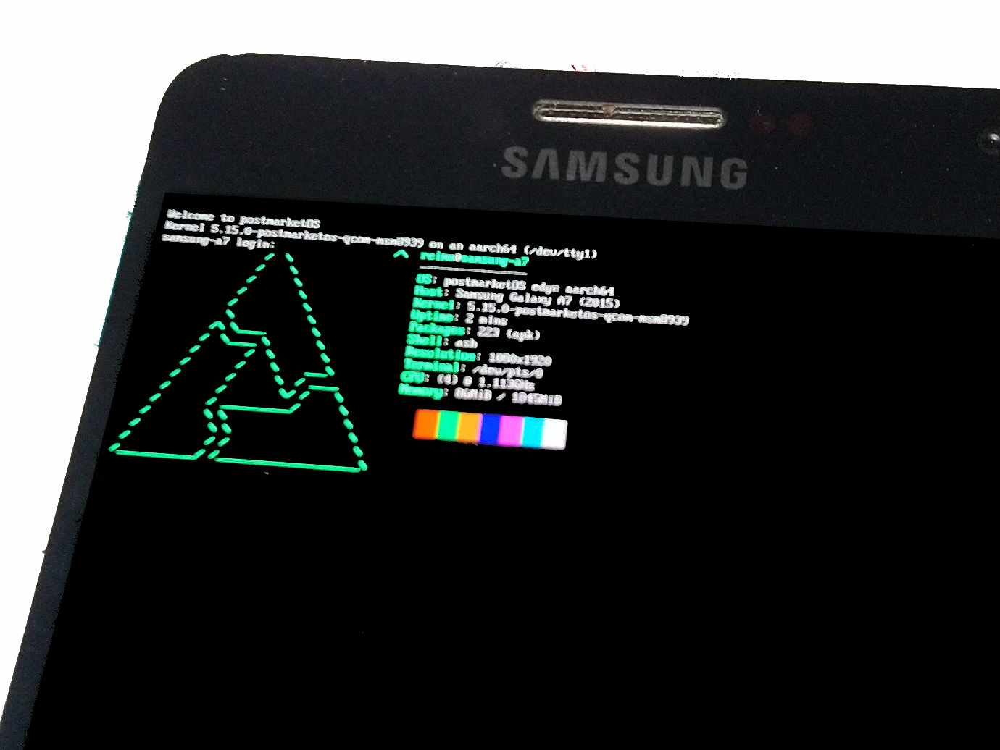

Samsung Galaxy A7 2015 (samsung-a7)
|

neofetch |
|
| Manufacturer | Samsung |
|---|---|
| Name | Galaxy A7 (2015) |
| Codename | samsung-a7 |
| Released | 2015 |
| Category | testing |
| Original software | Android 4.4.4 / 5.0.2 |
| postmarketOS kernel | Mainline |
| Hardware | |
| Chipset | Qualcomm MSM8939 Snapdragon 615 |
| CPU | 4x1.2 Ghz Cortex-A53 & 4x1.0 GHz Cortex-A53 |
| GPU | Adreno 405 |
| Display | 1080 x 1920 |
| Storage | 16 GB |
| Memory | 2 GB |
| Architecture | aarch64 |
| Unixbench Whet/Dhry score | 1022.4 |
{kind=link}
| USB Networking |
Works
|
|---|---|
| Flashing |
Works
|
| Touchscreen |
Works
|
| Display |
Partial
|
| WiFi |
Works
|
| FDE |
Partial
|
| Mainline |
Works
|
| Battery |
Partial
|
| 3D Acceleration |
Partial
|
| Audio |
Works
|
| Bluetooth |
Works
|
| Camera |
Broken
|
| GPS |
|
| Mobile data |
Works
|
| SMS |
Works
|
| Calls |
Works
|
| USB OTG |
Partial
|
| NFC |
Works
|
| Accelerometer |
Works
|
|---|---|
| Magnetometer |
Works
|
| Ambient Light |
Broken
|
| Proximity |
Broken
|
| Hall Effect |
Works
|
| Barometer |
|
| Power Sensor |
|
| Keyboard |
|
|---|---|
| Touchpad |
|
| USB-A |
|
| HDMI/DP |
|
| Ir TX |
|
| TrustZone |
|
| FOSS bootloader |
|
|
This device is based on the
Snapdragon 615
.
See the SoC page for common tips, guides and troubleshooting steps |
Users owning this device
How to enter flash mode
Press Volume Down, Power, and Home all at the same time to boot to Odin mode. After lk2nd is installed, press Volume Down and Power at the same time.
Installation
lk2nd is a secondary bootloader that provides a standard fastboot interface.
- Download lk2nd-msm8916.img from Releases page on Github.
- Boot your phone to bootloader (download) mode by holding Volume Down and Home while powering up.
-
Follow
lk2nd instructions
to install lk2nd. Basically flash it to boot partition (
heimdall flash --BOOT lk2nd-msm8916.img) - Follow Qualcomm_Snapdragon_410/412_(MSM8916)#Installation to install postmarketOS.
|
|
Note: Enter lk2nd fastboot mode by pressing only Volume Down + Power ( without Home ). Pressing Home additionally will bring you to the Samsung Download mode. |
Audio
|
|
WARNING: The speakers are rather loud on 100% volume and may produce distorted sound that may damage your speakers after long use. Please make sure to use reasonable volumes - your ears and your speaker will thank you! |
Panel
Framerate is reduced to 5/6x [1] on mainline, and there is no backlight/brightness control support yet.
Touchscreen
Cyttsp5 touchscreen driver is WIP [2] , but we can use some patches sent to upstream and test it [3] . There is no successful attempt on SM-A700H for now.
$ dmesg | grep cyttsp5
[ 14.031305] cyttsp5 6-0024: Error on deassert int r=-6
[ 14.031344] cyttsp5 6-0024: Fail initial startup r=-19
3D acceleration
Instead of 60 fps, A7 runs at 30 fps instead. With panel driver patched, it runs at only 25 fps now.
Touch keys
See Tm2-touchkey .
Charging
rt5033-charger
driver is not available, so the charging is not controlled and there is no charging status reporting.
There is also a forgotten patch
[4]
.
USB OTG
Another
rt5033-charger
driver issue. It's currently unable to power up a usb device in mainline. Try a hub with external power supply.
Ambient Light/Proximity Sensor
The driver for
tmd3782
ambient light/proximity sensor is not available.
Reboot Loop
There are some issues on the hardware, which cause endless reboot even you have a 100% charged battery.